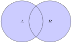
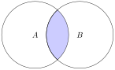
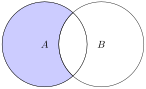

In this section we review the set theory definitions of element and subset from Section 1.2. Then we introduce several definitions for operations on sets.
We have been using some of the set notation throughout the course. We review it here for convenience. We usually use capital letters for sets, such as \(S\) or \(A\text{.}\) If we want to talk about elements in a set \(S\text{,}\) we use the notation \(x\in S\text{.}\) We read this notation as “\(x\) is in \(S\)” or “\(x\) is an element of \(S\text{.}\)” If \(x\) is not in \(S\text{,}\) then we use the notation \(x\notin S\text{.}\)
In general, if we use \(P(x)\) to describe a property of \(x\text{,}\) we use the notation
\begin{equation*}
\{x\in S : P(x)\}
\end{equation*}
and read the statement as "\(x\) in \(S\) such that \(x\) has property \(P\text{.}\)"
We gave an initial definition of subset in Definition 1.2.2, and introduced the notation for subset: \(A\subseteq B\text{.}\) Now that we will be working with sets more formally, we give a more formal definition of a subset, which will be easier to use in proofs.
Definition6.1.1.
\(A\) is a subset of \(B\text{,}\)\(A\subseteq B\text{,}\) if for all \(x\text{,}\) if \(x\in A\) then \(x\in B\text{.}\)
\(A\) is a not a subset of \(B\text{,}\)\(A\nsubseteq B\text{,}\) if there exists \(x\text{,}\) such that \(x\in A\) and \(x\notin B\text{.}\)
Definition6.1.2.
We say two sets are equal, \(A=B\text{,}\) if \(A\subseteq B\) and \(B\subseteq A\text{.}\)
Definition6.1.3.
\(A\) is a proper subset of \(B\) if \(A\subseteq B\) and \(A\neq B\text{.}\)
To important sets are the universal set, \(U\text{,}\) which is the set of everything, and the empty set, \(\emptyset\text{,}\) which is the set with nothing. The universal set depends on the context. For example, in calculus, the universal set is often the set of real numbers. In number theory, it could just be the integers. In computer science, it could be the set of sequences of 0 and 1. When dealing with abstract sets, we might want to define a convenient universal set.
We now give the element definitions for common set operations, along with the Venn diagrams for each of the sets.
Definition6.1.4.
The set \(A\cup B\) is the union of sets \(A\) and \(B\) where \(x\in A\cup B\) if and only if \(x\in A\) or \(x\in B\text{.}\)
In set notation, \(A\cup B=\{x\in U : x\in A \text{ or } x\in B\}\text{.}\)

Figure6.1.5.Venn diagram for \(A\cup B\)
Definition6.1.6.
The set \(A\cap B\) is the intersection of sets \(A\) and \(B\) where \(x\in A\cap B\) if and only if \(x\in A\) and \(x\in B\text{.}\)
In set notation, \(A\cap B=\{x\in U : x\in A \text{ and } x\in B\}\text{.}\)

Figure6.1.7.Venn diagram for \(A\cap B\)
Definition6.1.8.
The set \(A-B\) is the set difference of sets \(A\) and \(B\) where \(x\in A-B\) if and only if \(x\in A\) and \(x\notin B\text{.}\)
In set notation, \(A-B=\{x\in U : x\in A \text{ and } x\notin B\}\text{.}\)

Figure6.1.9.Venn diagram for \(A-B\)
A common alternate notation for set difference is \(A\setminus B\text{.}\)
Definition6.1.10.
The set \(A^C\) is the complement of set \(A\) where \(x\in A^C\) if and only if \(x\notin A\text{.}\)
In set notation, \(A^C=\{x\in U : x\notin A\}\text{.}\)
What this really says is that a set of subsets will be a partition of \(B\) if the union of the subsets is all of \(B\text{,}\) and the subsets are pairwise disjoint, meaning the intersection of any pair of sets is empty.
Let \(B=\{1, 2, 3, 4, 5, 6\}\text{.}\) Then let \(A_1=\{1\}, A_2=\{2, 4, 6\}, A_3=\{3, 5\}\text{.}\) We can see that \(\{A_1, A_2, A_3\}\) is a partition of \(B\) since \(A_1\cup A_2\cup A_3=B\) and the subsets have no elements in common, hence they are disjoint.
Now if we let \(A_1=\{1, 2, 3, 4\}, A_2=\{2, 3, 4, 5, 6\}\text{.}\) We can see that \(\{A_1, A_2\}\) is not a partition of \(B\) since \(A_1\cap A_2=\{2, 3, 4\}\neq\emptyset\text{.}\)
Activity6.1.4.
To prove \(A\subseteq B\text{,}\) assume \(x\in A\text{,}\) show \(x\in B\text{.}\) Prove \(\{6k: k\in \mathbb{Z}\}\subseteq\{3k: k\in \mathbb{Z}\}\text{.}\) Make sure in your proof you identify what you need to assume and what you need to show.
Activity6.1.5.
Find a counterexample to prove \(\{3k: k\in \mathbb{Z}\}\nsubseteq\{6k: k\in \mathbb{Z}\}\text{.}\)
\(A=\{x\in \mathbb{R}: \cos x \in \mathbb{Z}\}, B=\{x\in \mathbb{R}: \sin x \in \mathbb{Z}\}\text{.}\)
2.
Complete the following sentences without using the symbols \(\cup, \cap\text{,}\) or \(-\text{.}\)
\(x\notin A\cup B\) if and only if ___.
\(x\notin A\cap B\) if and only if ___.
\(x\notin A- B\) if and only if ___.
3.
Let \(A=\{1, 3, 5, 7, 9\}\text{,}\)\(B=\{3, 6, 9\}\text{,}\) and \(C=\{2, 4, 6, 8\}\text{.}\) Find each of the following:
\(A\cup B\text{.}\)
\(A\cap B\text{.}\)
\(A\cup C\text{.}\)
\(A\cap C\text{.}\)
\(A-B\text{.}\)
\(B-A\text{.}\)
\(B\cup C\text{.}\)
\(B\cap C\text{.}\)
4.
Let the universal set be \(\mathbb{R}\text{,}\) and let \(A=\{x\in \mathbb{R}:0< x\leq 2\}\text{,}\)\(B=\{x\in \mathbb{R}:1\leq x< 4\}\text{,}\) and \(C=\{x\in \mathbb{R}:3\leq x< 9\}\text{.}\) Find each of the following:
\(\displaystyle A\cup B\)
\(\displaystyle A\cap B\)
\(\displaystyle A^{C}\)
\(\displaystyle A\cup C\)
\(\displaystyle A\cap C\)
\(\displaystyle B^{C}\)
\(\displaystyle A^{C}\cap B^{C}\)
\(\displaystyle A^{C}\cup B^{C}\)
\(\displaystyle (A\cap B)^{C}\)
\(\displaystyle (A\cup B)^{C}\)
5.
Determine whether each of the following are true or false.
Let \(A=\{a, b, c\}\text{,}\)\(B=\{b, c, d\}\text{,}\) and \(C=\{b, c, e\}\text{.}\)
Find \(A\cup(B\cap C)\text{,}\)\((A\cup B)\cap C\text{,}\) and \((A\cup B)\cap (A\cup C)\text{.}\) Which of these sets are equal?
Find \(A\cap(B\cup C)\text{,}\)\((A\cap B)\cup C\text{,}\) and \((A\cap B)\cup (A\cap C)\text{.}\) Which of these sets are equal?
Find \((A-B)-C\) and \(A-(B-C)\text{.}\) Are these sets equal?
7.
Determine if the following statements are true or false. Give a justification for you answer.
The number 0 is in \(\emptyset\text{.}\)
\(\displaystyle \emptyset= \{\emptyset\}\)
\(\displaystyle \emptyset\in \{\emptyset\}\)
\(\displaystyle \emptyset\in \emptyset\)
8.
Let \(A_i=\{x\in \mathbb{R}: -i\leq x\leq i\}\) (the interval \([-i, i]\)) for all nonnegative integers \(i\text{.}\)
Find \(\bigcup_{i=0}^{4}A_i\text{.}\)
Find \(\bigcap_{i=0}^{4}A_i\text{.}\)
Are \(A_0, A_1, A_2\ldots\) pairwise disjoint? Explain.
Find \(\bigcup_{i=0}^{n}A_i\text{.}\)
Find \(\bigcap_{i=0}^{n}A_i\text{.}\)
Find \(\bigcup_{i=1}^{\infty}A_i\text{.}\)
Find \(\bigcap_{i=1}^{\infty}A_i\text{.}\)
9.
Determine if the set of sets is a partition of the given set.
Is \(\{\{a, d, e\}, \{b, c\}, \{d, f\}\}\) a partition of \(\{a, b, c, d, e, f\}\text{?}\)
Is \(\{\{w, x, v\}, \{u, y, q\}, \{p, z\}\}\) a partition of \(\{p, q, u, v, w, x, y, z \}\text{?}\)
Is \(\{\{5, 4\}, \{7, 2\}, \{1, 3, 4\}, \{6, 8\}\}\) a partition of \(\{1, 2, 3, 4, 5, 6, 7, 8\}\text{?}\)
Is \(\{\{3, 7, 8\}, \{2, 9\}, \{1, 4, 5\}\}\) a partition of \(\{1, 2, 3, 4, 5, 6, 7, 8, 9\}\text{?}\)
Is \(\{\{1, 5\}, \{4, 7\}, \{2, 8, 6, 3\}\}\) a partition of \(\{1, 2, 3, 4, 5, 6, 7, 8\}\text{?}\)
10.
Let
\begin{equation*}
\begin{aligned}
A_0&=\{n\in\mathbb{Z}: n=4k \text{ for some } k\in \mathbb{Z}\}\\
A_1&=\{n\in\mathbb{Z}: n=4k+1 \text{ for some } k\in \mathbb{Z}\}\\
A_2&=\{n\in\mathbb{Z}: n=4k+2 \text{ for some } k\in \mathbb{Z}\}\\
A_3&=\{n\in\mathbb{Z}: n=4k+3 \text{ for some } k\in \mathbb{Z}\}
\end{aligned}
\end{equation*}
Is \(\{A_0, A_1, A_2, A_3\}\) a partition of \(\mathbb{Z}\text{?}\) Explain your answer.
11.
Let \(A=\{1, 2\}\) and \(B=\{2, 3\}\text{.}\) Find